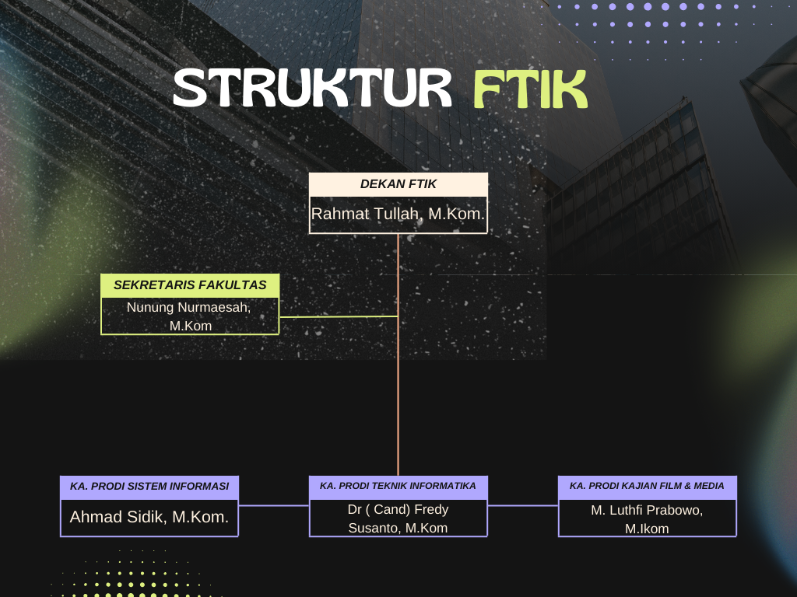

Organizational Structure
Struktur Organisasi Fakultas Teknologi Informasi & Komunikasi Institut Global

Struktur Organisasi FTIK
Dekan FTIK
Rahmat Tullah, M.Kom.
Ka. Prodi Sistem Informasi :
Ahmad Sidik, M.Kom.
Ka. Prodi Teknik Informatika :
Dr ( Cand) Fredy Susanto, M.Kom
Ka. Prodi Kajian Film & Media
M. Luthfi Prabowo, M.Ikom
Sekretaris Fakultas :
Nunung Nurmaesah, M.Kom ( FTIK ).